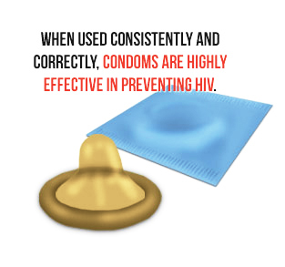
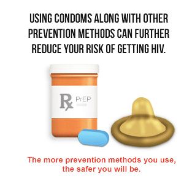
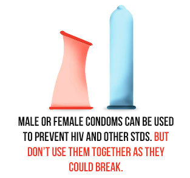

How Well Do Condoms Prevent HIV?
Condoms are an important tool in preventing the spread of HIV.
When used consistently and correctly, condoms are highly effective in preventing HIV. They are also effective at preventing sexually transmitted diseases (STDs) that are transmitted through bodily fluids, such as gonorrhea and chlamydia. However, they provide less protection against STDs spread through skin-to-skin contact like human papillomavirus (genital warts), genital herpes, and syphilis.
Although highly effective when used consistently and correctly, there is still a chance of getting HIV if you only use condoms, so adding other prevention methods can further reduce your risk.
Two Types of Condoms
There are two types of condoms: male and female.
Male Condoms
- A male condom is a thin sheath worn over a man’s erect penis to keep seminal fluid (cum) or pre-seminal fluid (pre-cum) from entering his partner’s body during oral, anal, or vaginal sex.
- Male condoms are made of different substances. Latex condoms provide the best protection against HIV. Polyurethane (plastic) or polyisoprene (synthetic rubber) condoms are good options for people with latex allergies. Natural membrane condoms (such as those made out of lambskin) do not protect as well against HIV and certain other STDs because they are porous, meaning that infections can pass through them.
- Lubricants can help prevent condoms from breaking. Water-based and silicon-based lubricants are safe to use with latex condoms. However, oil-based lubricants (e.g., petroleum jelly, shortening, mineral oil, massage oils, body lotions, and cooking oil) should not be used with latex condoms because they can weaken latex and cause breakage.
Female Condoms
- A female condom is a thin pouch worn inside the woman’s vagina to keep her partner’s seminal fluid (cum) or pre-seminal fluid (pre-cum) from entering her body during intercourse. The female condom has a ring on each end. The inside ring holds the condom in place inside the vagina. The outer ring stays outside the vagina so it covers the labia.
- Female condoms are made of a rubber-like substance called nitrile. (They are not latex.) When worn in the vagina, female condoms are just as effective as male
- condoms at preventing STDs, HIV and pregnancy. Some people use female condoms for anal sex. However, we do not know how well female condoms prevent HIV and other STDs when used for anal sex. But we do know that HIV cannot travel through the nitrile barrier.
- It is safe to use either water-based or oil-based lubricants with nitrile female condoms.
How To Use A Condom Consistently And Correctly
Male and female condoms can be used to protect you from HIV or other STDs. But don't use them both at the same time. If used together, they won't stay in place, and they can tear or become damaged. Read the instructions on the condom package and practice before using them for the first time. Also, follow these guidelines:
Male Condoms
- Keep male condoms in a cool, dry place. Don't keep them in your wallet or in your car. This can cause them to break or tear. Check the wrapper for tears and for the expiration date, to make sure the condom is not too old to use. Carefully open the wrapper. Don't use your teeth or fingernails. Make sure the condom looks okay to use. Don't use a condom that is gummy, brittle, discolored, or has even a tiny hole.
- Put on the condom as soon as the penis is erect, but before it touches the vagina, mouth, or anus.
- If the condom does not have a reservoir tip, pinch the tip enough to leave a half-inch space for semen to collect. Holding the tip, unroll the condom all the way to the base of the erect penis.
- Be sure to use adequate lubrication during vaginal and anal sex. Only use water-based or silicone-based lubricants. Don’t use oil-based lubricants (e.g., petroleum jelly, shortening, mineral oil, massage oils, body lotions, and cooking oil) with latex condoms because they can weaken latex and cause breakage. Put the lubricant on the outside of the condom.
- After ejaculation and before the penis gets soft, grip the rim of the condom and carefully withdraw. Then gently pull the condom off the penis, making sure that semen doesn't spill out.
- Wrap the condom in a tissue and throw it in the trash where others won't handle it.
- If you feel the condom break at any point during sexual activity, stop immediately, withdraw, remove the broken condom, and put on a new condom.
- Use a new condom if you want to have sex again or in a different way.
Female Condoms
- Store the female condom at normal room temperature.
- Check the wrapper for tears and for the expiration date, to make sure the condom is not too old to use. Carefully open the wrapper. Don't use your teeth or fingernails. Make sure the condom looks OK to use. The condom will be moist and may be slippery.
- Put the condom into the vagina up to eight hours before having sex, but before the penis touches the vagina. The condom cannot disappear inside your body.
- To insert the condom, squeeze the inner ring with your thumb and middle finger and insert it into the vagina like a tampon. Then, use your index finger to push the inner ring as far up as it will go, without twisting the condom. There should be about an inch of condom outside your vagina to allow for the condom to expand during sex.
- The condom comes pre-lubricated. But it is okay to use either water- or oil-based lubricants. Put the lubricant on the inside and outside of the condom.
- During sex, make sure the outer ring of the condom isn't pushed into your vagina.
- After sex, hold the condom in place while your partner withdraws his penis. Remove the condom before standing up. Grasp the outside ring and twist the condom to trap in fluid and gently remove. Or, you can hold the condom tight around your partner's penis and he can pull out his penis and the condom at the same time, being careful not to spill any fluid out of the condom.
- Wrap the condom in a tissue and throw it in the trash where others won't handle it.
- Use a new condom if you want to have sex again or in a different way.